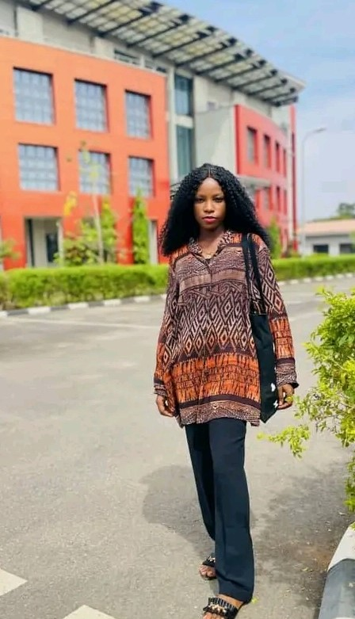

About Myself
✋ Hi, I have always believed that the journey of self discovery is an ongoing process, a continous exploration of the complexities that makes us unique indiviuals.My story is a reflection of this never-ending quest to understand myself,my aspirations and my place in the world.
Biography
Sorry I haven't introduced myself☺☺
My name is Matthew Esther , I am a native of Ibadan in Oyo state and was also born in Ibadan on the 26th of December,1998. I am the only female child and i have 3 wonderful siblings.I went to MIRACLE INT SCHOOL for my primary education,from there i went to SAINT ANNES SCHOOL,MOLETE IB for my secondary school education where i met the most amazing person in my life!, so after my secondary school education,i couldn't further my education and i had to work for a while.During those times,i learnt how to make bags, i learnt makeup and i also learnt about life on the street☻, so after all the ups and downs, i gained admission to study Geology at the UNIVERSITY OF IBADAN.
From a young age, I was captivated by the world around me, constantly questioning, observing and absorbing knowledge. My insatiable curiosity was nurtured by my family, who always encouraged me to explore my interests.
Passion and Hobbies
When I was much younger, I used to like travelling,playing football,watching movies and i also enjoy cooking too but now as a student my hobbies are reading books,surfing the internet,writing codes and that's all☻
I used to think that being a student gives you the luxury of doing all the things you want to do but then being a Uite and an AltSchooler has made me see things in a new light, Student life has different shades of shege!!
Beyond the classroom, I found interest in getting to know about tech and the huge money that comes with being a tech sis and as i have said earlier, I am studying Geology which is basically the study of Earth and the processes that have shaped it. Right from time, I have loved working on a computer i always get strucked when i see young people working or doing anything on their computers ☺ and that was when my interest for going into tech surfaced..I wanted to be able to make things happen with my computer,i wanted to be able to bring my ideas to life which brings me to talking about ALT SCHOOL and my life as an AltSchooler.
Life as an AltSchooler
I got to know about Altschool when i watched one of Layi Wasabi's comedy skits,and then i went to their website and fell in love with the system,instantly i developed the urge to be part of the team.Though prior to when i got to know about Altschool, i have been writing codes and you can see some of the webpages i built here.I needed to brush up my skills, I needed a touch of professionalism and validation to be a world class programmer so i applied on their registration site and to the glory of God i aced the entrance examination.AFter that we were given school id which validate our studentships mine is ALT/SOE/023/2891 which means i am being admitted into the school of Engineering and my current track is Front End Engineering.
The school is online based and as the name implies, it is an alternative approach to learning..it has over 10,000 students accross all countries from the world and the school is divided into three as at when i applied and my school which is school of engineering is further divided into three tracks which are basically;
It is a one year program and the program is further divided into 3 semesters..You want to more about my school?,Stay tuned for my next article or you can click here. You can also register too by clicking on this link.
- Frontend Engineering
- Backend Engineering
- Cloud Engineering
My Goals
Being in a tech school is very exciting and can be tasking too but i am ready to put in all the work to become a better person after the program. Here is a list of goals i want to achieve during my time in AltSchool.
1. Develop Technical Skills;
By the End of this programme, I want to be able to master the technical skills and knowledge necessary to become a world class engineer
2. Gain Practical Experience;
I want to be able to apply what i learnt in real-world situations through internships,projects and co-op programs
3. Network;
Connect with professors,fellow students, and professionals in your field. Networking can lead to job opportunities and collaborations.
4. Work on Personal Projects;
By the end of this programme, I want to be able to work on complex projects i never dared to work on before and also work on personal tech projects that i'm passionate about.
5. Certifications;
I aim to earn relevant certifications that can boost my career prospects.
6. Become part of the Team
That's my dream!!, I want to be part of the software engineers that make things happen at ALTSCHOOL.Gallery

Contact
You can chat me up on whatsapp by clicking here and if you are on twitter, you can send a text here and click the follow button to follow me.you can call me or text me or send a mail .